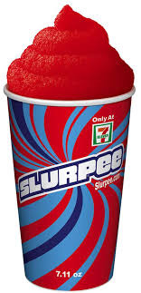

Archetypes, Order, and Chaos in Heathers: The Musical
How can we look at Heathers from a psychological point of view?
Synopsis

In Heathers: The Musical, the titular Heathers represent the tyrannical order of the social hierarchy, whereas JD is the chaos or the evil queen. Veronica is the hero that starts as a fool and becomes the saviour. She starts blind but upon being exposed to the two absolute forces integrates her shadow elements while maintaining her upward aim and eventually restores balance against the corrupted chaos and reestablishes a better order. This play represents the hero's journey and transformation, and outside of one thing I will mention later, can be traced as extremely archetypical, indirectly incorporating many elements of myth.
Prelude
Heathers is a play that has captured my attention for quite a while now. At first, I wasn't too keen on it, because I viewed it on a surface level only, finding the suicide jokes and edginess in bad taste. Nonetheless, it has stuck in my mind and after a while I started finding it quite complex under the surface. I believe Heathers to be an intricate piece of media, that can be analysed in quite a few ways: directly, musically, aesthetically, as satire, as social critique, psychologically, archetypically, etc. I will attempt to look at it from the last two perspectives. To be successful in this way, I will have to correlate it with other stories and archetypical figures. I will attempt to explain where and what I am referring to, and to keep the references to commonly known ones for the most part.
I will begin by admitting my biases: As a viewer particularly drawn to JD's composure and intellect, I acknowledge the potential for bias in my interpretation. I will attempt to not have my personal appreciation of Jason Dean's tact and composure make my analysis any less objective, but it is still good to acknowledge.
This type of analysis pays a lot of homage to Carl Jung's archetypical breakdowns and Joseph Campbell's The Hero with a Thousand Faces. For my complete sources of inspiration, see references. Still, I think I should explain what order and chaos mean here: order represents the known, stable being, the culture if you will and is described by Jung as a combination of the wise king and the tyrannical ruler. Chaos is the unknown but potential being, the nature and can be seen as either the good queen, rejuvenating life and freedom into a stale system or the cruel mother, destroying what is good and sacred. Neither chaos nor order is bad inherently and the hero in literature is the one that walks that line, and that transitions a system between them.
We can trace any story to these two forces and interactions between them. Some examples of this that are easy to see are: Prometheus steals (uses chaos) to bring balance to the tyrannical order of Zeus; King Arthur ventures through chaos (the search for the Holy Grail) to remake the order of Camelot that has become stagnant; Gandalf in Lord of the Rings is both an agent of order (as he counsels) and chaos (as he is a wizard but also challenges the order in the Shire).
Whenever a direct quote from Heathers: The Musical is used, it will be within quotation marks (""). For titles from other sources or paraphrasing, I will be using italics.
Character Archetypes
A short map of the archetypes of the characters:
- Veronica: the fool (the progenitor to the hero)
- J.D.: The Trickster / The Shadow / The Luciferic Intellect
- Heather C.: the tyrant that still has some remnants of the wise king
- Heather D.: the usurper/unworthy heir, that tries to emulate her progenitor badly
- Heather M.: just another pawn in the hierarchy (later reveals her innocence)
- Kurt/Ram: brutes, the force of nature (chaos) that need the order to keep them under control
The Status Quo and Veronica
The play begins with darkness, representing the unknown: "September 1st, 1989. Dear Diary (...)". The voice of Veronica's monologue is our first step into the story and frames it as something seen from her perspective. We can associate this with the creation myth, God making order out of chaos with the Logos (word) being alike. It is also a narrative way to introduce Veronica as the type of person that might have a diary, therefore someone high in self-awareness or reflective in nature.
Following this, we begin to understand more about how Veronica thinks: "You know, I think that there's good in everyone." She assumes everyone's morality without knowing what it means to be immoral herself. There is also a divine interpretation of this, with man being created in the image of God (the absolute good). However, her moral axiom is proved at least partially incorrect: "I look around at these kids that I've known all my life and I ask myself, 'What happened?' " This is a transformation due to inaction. At a fundamental level, and this is true in life as well, the passing of time is a transformation in itself, and if you do not keep up and accept the change necessary, the system will degenerate. As Lewis Carroll puts it: In my kingdom, you have to run as fast as you can just to stay in the same place.
The students use a lot of insults, with "freak" and "homo" standing out. Out of all insults used, it is only these two that are repeated. The second one plays a role in establishing the context and does some foreshadowing for the "dead gay sons" bit in act two, however both also play a more subtle role: conveying that social alienation is the worst form of punishment that can be. In that same vein, Veronica's sigh after "but around here that is not enough" can be taken as criticising the status quo, but also more abstractly as her subconsciously understanding that being kind and blind is not enough, that more is needed to succeed.
What the Heathers Represent
The first part of "Beautiful" contains references to the primordial paradise, the concept that before the world began there was an absolute good present, an ideal (the Greek Golden Age, First Time of the Egyptians, Satya Yuga, etc.), and that the ultimate goal should be returning back to that. "If we changed back then, We could change again" and "We were kind before, We can be kind once more" shows Veronica's idealistic nature, believing that the passing of time can be undone, and that this return to paradise can be achieved.
"As soon as my letter, Comes from Harvard, Duke, or Brown" is yet another instance of the Word being seen as the redeemer, the letter is the key for salvation.
More theological correlation comes in: "I pray, I pray, / For a better way." Prayer does not have to be religious. Praying is aiming at an ideal usually, but not always the theological law, and specifically Christian prayer is putting the highest good at the top of the hierarchy, a perspective achievable by non-believers as well. "Somebody save me. Send me a sign, God" indicates the unhappiness with the current way of being, with what happens next in the song relating closely, as the Heathers are like deities in the social hierarchy "floating above it all".
We are now presented with the ideal: "never bothered, never harassed. I would give anything to be like that", an interesting line considering that earlier Veronica wanted the tyranny to end but now it would also be good to her if she were in control herself, a classic showing of the corrupting allure of power. This idea is followed up on in the enumeration of "that would be beautiful". Everyone in the school just wants for themselves to be on top. The school is a real tyranny not only due to the rigid hierarchy of power, but also since there is tyranny inside everyone. The line separating good and evil passes through all human hearts, as Solzhenitsyn so masterfully puts it.
Now the Heathers are tyrants, but they are not without merit. Upon their attention being drawn to Veronica, McNamara sees the potential in her "For a greasy little nobody, you do have good bone structure", and Chandler admits her merit "This is an excellent forgery". This forgery ability is crucial to the entire plot of the story, as it is traceable back to the hero's mediating ability between chaos and order. In this case in particular it represents something among the lines of the ability to bend the structure of reality through the word (logos) throughout the play.
"Make her beautiful! / Okay? / Okay!" Beautiful does not only mean nice looking on the outside, in the context of high school beautiful could mean something closer to "like the Heathers" (since we established, they are the ideal in this frame) or powerful. It is also this explicit contract that puts emphasis on the transformation about to take place, like shaking hands with the devil. I also view it as one of the three transformative moments in the play.
The Transformation
Veronica undergoes a physical transformation and is confronted by Martha "But it's still the same me underneath. / Are you sure?" Jung would describe this as the persona, the concept that the you that you present to the world is the personality that is most accurate and will define you. Keeping up a mask becomes exhausting, the boundaries between the act and the real you becoming uncertain. She will be warned again by her mother later: "Don't let these popular girls change you". Mrs. Sawyer is the archetypical mother, caring for her child, advising her not to become shallow, change not referring to who you are, but what kind of person you are.
Heather D bending over when Veronica needs to write something, placing the notepad on her back. This is one of the direct references to the hierarchy of command. When Chandler asks for it, the other Heathers bend (literally) to her will, meaning even among "the gods" there are some above the others.
"It would be so righteous to be in the middle of a Heather Chandler Veronica Sawyer sandwich." Righteous is a heavy term especially for the "jock with no brain" archetype these two are playing. If we discard the usual meaning and think what it could mean we can come up with something like elevated, ultimate, amazing, which makes more sense and highlights the rapid increase in social standing of Veronica. Whereas before she was bullied, now she is not only seen as one of the popular girls, but not seen any different from them, like she belongs and had always belonged.
With all that being said, Veronica is not on solid ground, as shown in: "Are we gonna have a problem? [...] Listen up, biotch!" As soon as she tries to have a say against the established order she is met with backlash. Not only does she not have any real power of decision (for the moment), but she now is risking all her social progress if she is to keep trying to pull on the strings.
Thus the initiation process begins: "Welcome to my candy store. / It's time for you to prove, / You're not a loser anymore." To really become part of the Heathers she must abandon her old self. The ad nauseam repetition of the pronouns "I" and "my" enforce the illusion that the entirety of power is in the Heathers' hands. This is an extremely difficult decision to make, in a sense it is the first temptation of Jesus, that of turning stone into bread (using her forgery ability for harm here), and gaining the loyalty of more followers as a result. See The Grand Inquisitor of The Brothers Karamazov by F.M. Dostoyevsky for more on this comparison.
JD as the Renewing Chaos
Unlike the simplistic ideas coming from the rest of the high school, JD comes with a much more complex philosophy, showcasing his knowledge: "Clearly, you've got a soul. You just gotta work harder on keeping it clean. 'We are all born marked for evil.'" While Veronica pretended not to care about the Heathers "floating above it all" when she was at the bottom, now that she is in their good graces, she plays their game, unlike JD, which situates himself outside the regular pretext, an unbiased observer, that just wants Veronica's best. Another thing I must emphasise is the contrast between this and Veronica's "I believe there is good in everyone" from earlier, being two sides of the same coin, one seeing things as having degenerated recently, the other as them always having been this way.
Veronica senses the flux nature of JD, seizing the opportunity to undergo a change "And could you carry me, / Through no man's land?" When escaping tyranny, what follows is usually a journey into the chaos aiming to find the new order. This can correlate with Moses in the Bible guiding the Israelites from slavery into the desert, into "no man's land". She finds this attribute appealing, enough so she feels confident in declaring: "I would fight for you, / If you would fight for me" (later "I'd trade my life for yours").
It is also worth noting JD has experience with change and can also help Veronica embrace this side of her: "But the sky's gonna hurt when it falls. / So you'd better start building some walls". It is a well-established fact in psychology (Freudian and Adlerian psychology) that voluntary challenge is much more easily integrated than forceful, meaning it is much easier to prepare for something when you do it voluntarily.
I think JD fighting is also a metaphor for beating Kurt and Ram at their own game (physical violence) before beating the Heathers at theirs (social dominance). This is to show how the renewing chaos is more flexible than the stagnating order, but risks degenerating.
We soon find out more about JD. For instance, he says: "That's like going to Mickey D's and ordering a salad. Slurpee's the signature dish of the house. Did you say cherry or lime?" This is cool. This is the order within chaos, the fact that even JD, the anarchic careless archetype, must have a bounding element. Through his constant changes in life, and with his mother gone ("When Mom was alive") he looks for something constant and tries to fulfil this need any way he can. Heathers is non-archetypical in this one sense: usually culture/order is masculine and chaos/nature feminine, but here, at least on a surface level they are switched. Taking that into account, the mother would have been a stable element, that JD is sorely missing.
The general motif of self-harm in "Freeze Your Brain" highlights that when you are misaligned, your subconscious tries to tell you that in any way it can. This can manifest in a lot of ways, one of which is self-harming tendencies. Here JD uses "freezing" as a way of concealing the very real problems in his life. While this might seem fine to him at first, the problem is that the metaphoric dragon grows when ignored, and when the warmth of a relationship "melts" him, it is revealed that it became too large to handle.
Social Integration and Descent
"Dad says 'act our age', / You heard the man, it's time to rage!" a line of thought repeated throughout, that all of the main actants are just teenagers still, and not everything is the end of the world. All the hedonistic pleasure they are having in this song might come off as bad and worthless to some, but I don't see it as such a catastrophe. Take the following line: "People wouldn't hate you so much if you acted normal." This is social integration in a very real sense, and it, as is the case with almost everything, is an aspect of the age. "There's no alcohol in here! Are you trying to poison me?" While this is a gag, there is also the fear of poisoning socially, since being the most sober at a party wouldn't do Kurt any good.
When Veronica is confronted with the prank at Martha's expense, she decides to help her. This is a metaphor for the visionary helping the blind, and extending a hand to them, similar to the Egyptian myth of Seth, Horus and Osiris. After Veronica gives up all her good will with the Heathers, and pukes on Heather C.'s shoes she adds: "Oh, lick it up, baby. Lick. It. Up." This is either her simply hating the Heathers or can be taken as her body rejecting all the Heathers gave her (both in terms of social status and alcohol) and desecrating their divinity. It is a rejection of the order, and the event that marks Veronica's descent into chaos, moving past the fool, into the trickster archetype, the one that defies the order.
Dead Girl Walking
After this encounter with the Heathers, Veronica is left aimless. While she considers to "ride up to Seattle", that is not the right call, as it would be running from your problems. Instead, she accepts her falling out of the hierarchy, now having reached the true bottom, her old self and position socially dying and now being "a dead girl walkin", and decides to pursue the only alternative to the dogma of the Heathers.
The whole "Dead Girl Walking" song, I see as a role reversal, with Veronica being the agent of flux and JD the expected order: "I'm snappin' off your window lock. / Got no time to knock" is her entering on both a spiritual and physical level the realm of uncertainty, JD's house. If the way you first encounter order is by lawfully entering (faking the permission slips), the way you approach chaos is by breaking in.
"Veronica? What are you doing in my room?" Even JD is surprised by this development as it is outside regular arrangement. The "Sh..." by Veronica translates to her inviting him to go with the flow and not overanalyse. By the same logic, "Sorry, but I really had to wake you" could also mean waking from the slumber, open your eyes to my true nature, and "make this whole town disappear" might not be entirely hyperbole or metaphor, but a call to action coming from the most nihilistic depths of her being.
"Get on all fours" is a call to return to nature, embrace the rawness of instinct. Her making JD kneel and then kneeling herself could be them as equals or could be a keeping of the promise in "Fight for Me", that since he went down on his knees, she will follow. JD's acceptance in "that works for me" plays a double role, both as consent to the act, but also an acceptance of Veronica's new status. He is not going to question why she is like this now, just take it. If submitting yourself to beurocracy is the initiation ritual into the order, something as primal as sex is the equivalent of that into chaos.
The Transformation of the Hierarchy
Following this episode, we see one of Veronica's dreams. The morning after, Veronica doesn't regret the night before, but concedes that this is not her usual self, and she has to take a step back, since this way of being is too far out "Yes... I'm not strong like you are". Once at H.C.'s house, JD knows the recipe for the hangover cure representing his versatility. JD also opts not to warn Veronica about her potentially killing H.C., letting his impulse take over and force Veronica down his path.
For the following song, "The Me Inside of Me", I see the analysis as spelled out quite clearly. Veronica is misusing her power for chaos now, as she did earlier for order. "Heather cried, our sins fell on her shoulders!" evokes the Christ figure, et cetera.
Afterwards some time passes and we meet JD's dad. The two of them are talking in this weird way, like the other would talk usually: "JD: Why, Son. I didn't hear you come in. Mr. Dean: Yeah, Pop. I wanted to introduce you to my new girlfriend" and "JD: Hey, Champ". I see this as JD having to play the more responsible role in the household, while his father gets to be irresponsible.
"Blue" is a good example of the shifting nature of things, something that might seem good backfiring. It is the hydra when its head is cut off, what happens when you truncate the law. This, especially when combined with the false rumours and Duke's lack of leadership, makes the school's rigid structure break down. I say leadership because, even though Chandler was not perfect, she was not as bad as she could be. This is true in the general sense also, the tyrant still having an element of wisdom, there being always somewhere worse you could be. I really don't see Duke's leadership as a transition period, but as an abuse of misplaced responsibility, since she is not aiming towards a better goal.
JD as the bringer of light
JD now considers the world tainted (which is not unreasonable honestly considering his girlfriend was assaulted recently), and that the only way to redeem it is to remake it from the ground up "this broken world / We'll burn it down and then, / We'll build the world again." This is also a belief associated with the chaos, the idea that everything in society has to change to be optimal, and the king can only ever be tyrannical.
"Our love is God" becomes JD's new mantra. This is the replacement for what JD was claiming earlier, his one constant and point of reference becoming his boundless love for Veronica. The entire scene heavily evokes what John Milton would call the Luciferic intellect: the belief that reality is broken the way it is, and I am smart enough that I alone can determine a better way for it to be. The Luciferic intellect is the one that falls in love with its own creation. Also another subtle nod is the line "The morning comes", since morning usually refers to a new beginning, but also Lucifer is commonly known as the son of the morning (the morningstar), the bringer of light.
The act ends with Veronica finding out that JD was not joking: "What the fuck have you done?!" This is Veronica's balanced nature having a problem with the extreme behaviour of JD, and also is the first time she swears in the play (see "It's a beautiful frickin' day" earlier).
Note: This essay will continue with analysis of Act Two, exploring themes of truth, the emergence of the hero (journey into the underworld) and the final confrontation. It will also include further discussion of the resolution and archetypal patterns throughout the musical, from how the musical elements shift, to a quick comparison to the movie.
Refrences/Bibliography
- Campbell, Joseph. The Hero with a Thousand Faces. Princeton University Press, 1949.
- Jung, Carl Gustav. Man and His Symbols. Aldus Books, 1964.
- Jung, C.G. The Archetypes and the Collective Unconscious. Princeton University Press, 1981.
- Jung, C.G. Symbols of Transformation. Princeton University Press, 1956.
- Dostoevsky, Fyodor. The Brothers Karamazov. The Russian Messenger, 1880.
- Milton, John. Paradise Lost. 1667.
- Carroll, Lewis. Through the Looking-Glass, and What Alice Found There. Macmillan, 1871.
- Solzhenitsyn, Aleksandr. The Gulag Archipelago. Harper & Row, 1973.
- Heathers: The Musical by Laurence O'Keefe and Kevin Murphy. 2017 MusicalsOnTourUK